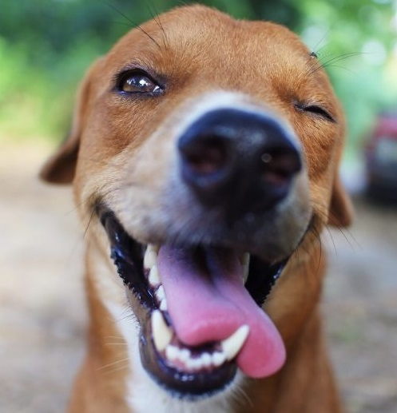

POR QUE ADOTAR?

Veja como é importante!
A quantidade de animais de rua e em situações de vulnerabilidade no Brasil infelizmente é gigantesca, o que tem tornado exaustivo o trabalho de ONGs e protetores independentes.
Quando você adota um animal, além de ganhar um amigo fiel e companheiro, permitirá que um novo bichinho seja resgatado e também possa ser feliz.
Permita que esse ciclo de felicidade continue! Seu novo amigo está lhe aguardando nas nossas entidades parceiras. Veja só alguns dos animais esperando um lar: